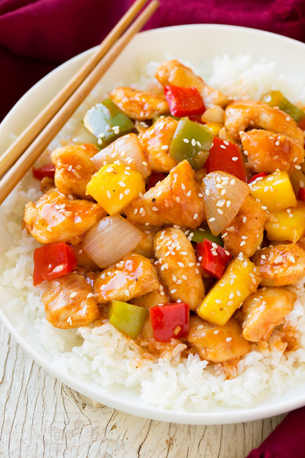

<html>
<head>
	<title>Item View</title>
	<link rel="stylesheet" type="text/css" href="assets/css/style.css" />
  	<link href='https://fonts.googleapis.com/css?family=Lato' rel='stylesheet' type='text/css'>
  	<link href='https://fonts.googleapis.com/css?family=Roboto' rel='stylesheet' type='text/css'>
  	<script src="assets/jquery-1.8.3.min.js"></script>
  	<script src="assets/script.js"></script>
</head>
</html>
<body>
<!-- Header -->
	<div class="header">
		<div class="title">
		MyCupcake
		
		</div>
		<div class="user-id">
		</div>
		<div class="user-options">
			<div class="user-bar-item"><b>Liz</b></div>
			<div class="user-bar-item-settings">Settings </div>

			<div class="user-bar-item">Sign out </div>
		</div>
		<div class="searchbar">
        	<input type="text" placeholder="Search"> </input>
     	</div>	

	</div>
	<div class="popover">
		<div class="popover-item">My Recipes </div>
		<div class="popover-item">Liked Recipes </div>
		<div class="popover-item">Following</div>
		<div class="popover-item">Followers</div>
		<div class="popover-item">New Recipe </div>

	</div>
<!-- Content-->
	<div class="content2">
		<div class="entry2">
			
			
			<div class="entry-option2">
				<div class="option3">
					
						301
				</div>
				<div class="option4">
					432 Comments
				</div>
			</div>
		</div>

		<div class="entry-description">
			
			<div class="text-field">
			<div class="entry-description-author"><font size="10"><font color="white">Chili Stir Fried Shrimp</font></font></div>
			<br>
			<font size="5"><font color="white">November 12, 2015 by <div class="entry-description-author">Liz	</div></font></font><br>
			<br>

			<b><font size="5">COOK TIME: </font></b>20 min 
			<br>       
			<b><font size="5">SERVES:</font></b> 4 
			<br>
			<br>
			<b><font size="5">INGREDIENTS:</font></b>
			<br>
			1 lb. shrimp, cleaned & deveined
			<br>
			1 clove of garlic
			<br>
			1/3 cup of sweet chili sauce
			<br>
			1 bell pepper 
			<br>
			1 white onion
			<br>
			1 tbsp sesame seeds
			<br>
			1 tbsp. olive oil
			<br>
			1/2 tsp. sesame oil
			<br>
			1 cup of jasmine rice 
			<br>
			<br>
			<br>
			<b><font size="5">INSTRUCTIONS:</font></b>
			<br>
			- Grab a medium sized pot and cook rice according to package directions. 
			<br><br>
			- In a large, wide skillet warm olive oil over moderate heat. 
			<br><br>
			- Dice up bell pepper and onion.  
			<br><br>
			- Using a grater, grate garlic clove into the skillet. (Mincing is also ok.) Continue to saute until very fragrant. (~30 seconds)
			<br><br>
			- Add deveined shrimp and cook until it develops a pink color.(~5 minutes) Remove shrimp from pan. 
			<br><br>
			- Saute the chopped bell pepper and onion in the same pan. Lightly salt and pepper. 
			<br><br>
			-Return the shrimp to the pan and add sweet chili sauce. Cook until shrimp is warmed up. 
			<br><br>
			-Sprinkle with sesame seeds. 
			<br><br>
			-Serve over a scoop of rice along with some lime to taste. 


			</div>
		</div>
		
		
	</div>

</body>
</html>